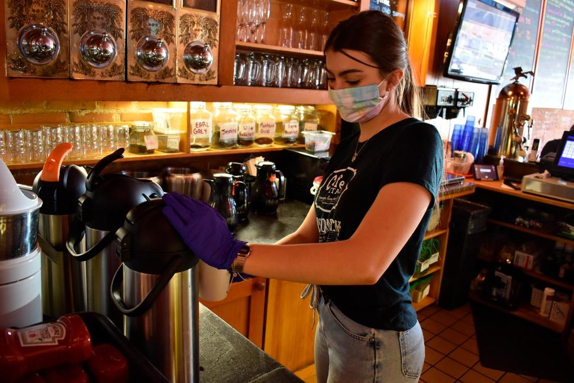
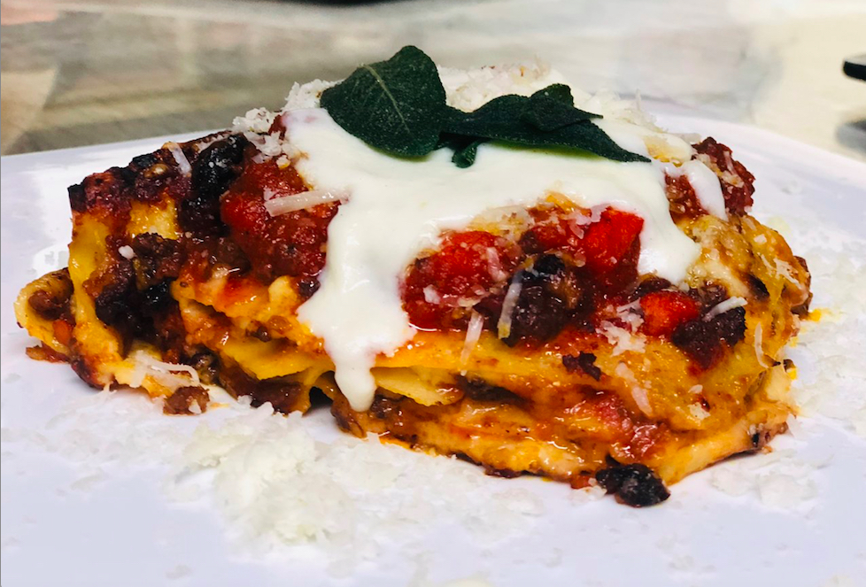

Best Food in Helena
Helena is an underrated scene for foodies. From quaint french bakeries, to flaming sushi spots, Helena has it all. We understand all of the options may be overwhelming, and some of the best spots don't even show up on Google. This site is here to do the legwork and show you our favorite places no matter the occasion!
I did the dirty work for you. I've eaten at almost every spot in helena, had a lot of amazing meals and a lot of horrible meals. On my lists I have included some stories from both ends of the spectrum. Not only will you know where to eat, but you will also know the places to avoid *cough* On Broadway *cough*. Sorry about it ;)